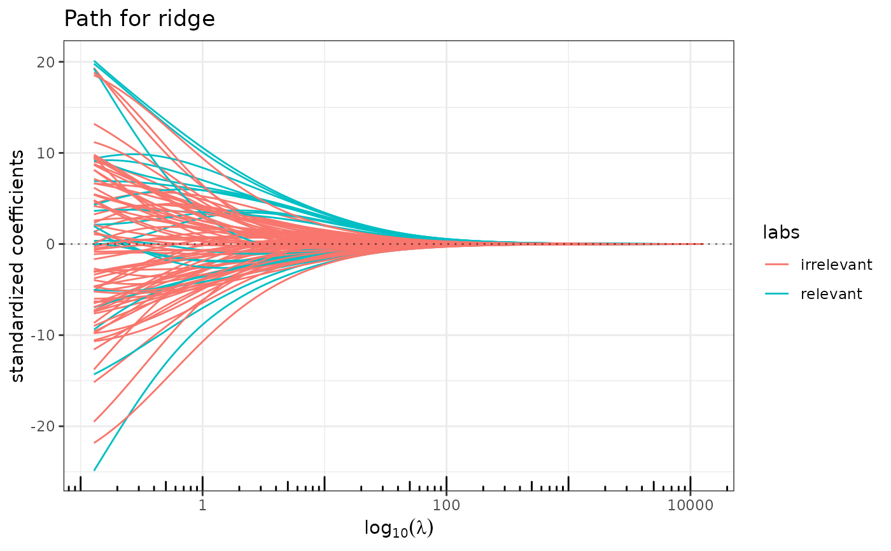
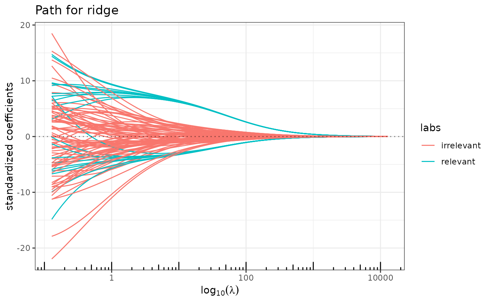

Adjust a linear model with ridge regularization (possibly structured \(\ell_2\)-norm). The solution path is computed at a grid of values for the \(\ell_2\)-penalty. See details for the criterion optimized.
Arguments
- x
matrix of features, possibly sparsely encoded (experimental). Do NOT include intercept. When normalized os
TRUE, coefficients will then be rescaled to the original scale.- y
response vector.
- lambda
sequence of decreasing \(\ell_2\)-penalty levels. If
NULL(the default), a vector is generated withnlambdaentries, starting from a guessed levellambda_maxwhere only the intercept is included, then shrunken tominratio*lambda_max.- struct
matrix structuring the coefficients, possibly sparsely encoded. Must be at least positive semidefinite (this is checked internally). If
NULL(the default), the identity matrix is used. See details below.- penscale
vector with real positive values that weight the \(\ell_1\)-penalty of each feature. Default set all weights to 1.
- intercept
logical; indicates if an intercept should be included in the model. Default is
TRUE.- normalize
logical; indicates if variables should be normalized to have unit L2 norm before fitting. Default is
TRUE.- nlambda
integer that indicates the number of values to put in the
lambdavector. Ignored iflambdais provided.- minratio
minimal value of \(\ell_1\)-part of the penalty that will be tried, as a fraction of the maximal
lambda1value. A too small value might lead to instability at the end of the solution path corresponding to smalllambda1combined with \(\lambda_2=0\). The default value tries to avoid this, adapting to the '\(n<p\)' context. Ignored iflambda1is provided.- lambda_max
the largest value of
lambdaconsidered- control
list of argument controlling low level options of the algorithm –use with care and at your own risk– :
verbose: integer; activate verbose mode –this one is not too risky!– set to0for no output;1for warnings only, and2for tracing the whole progression. Default is1. Automatically set to0when the method is embedded within cross-validation or stability selection.timer: logical; use to record the timing of the algorithm. Default isFALSE.maxiterthe maximal number of iteration used in the active set algorithm to solve the problem for a given value of lambda1 . Default is 50.methoda string for the underlying solver used. Either"quadra","fista"or"pgd". Default is"quadra".factmatBoolean indicating if matrix factorization should be used to solve the sub-system. IfTRUE(the default), a Cholesky decomposition is maintained along the path. IfFALSE, the sub-system are solved with a conjugate gradient algorithm.thresholda threshold for convergence. The algorithm stops when the optimality conditions are fulfill up to this threshold. Default is1e-6.monitorindicates if a monitoring of the convergence should be recorded, by computing a lower bound between the current solution and the optimum: when'0'(the default), no monitoring is provided; when'1', the bound derived in Grandvalet et al. is computed; when'>1', the Fenchel duality gap is computed along the algorithm.
Value
an object with class RidgeRegressionFit, inheriting from QuadrupenFit.
Note
The optimized criterion is the following:
struct argument (possibly of
class Matrix).
See also
See also QuadrupenFit
Examples
## Simulating multivariate Gaussian with blockwise correlation
## and piecewise constant vector of parameters
beta <- rep(c(0,1,0,-1,0), c(25,10,25,10,25))
cor <- 0.75
Soo <- toeplitz(cor^(0:(25-1))) ## Toeplitz correlation for irrelevant variables
Sww <- matrix(cor,10,10) ## bloc correlation between active variables
Sigma <- Matrix::bdiag(Soo,Sww,Soo,Sww,Soo)
diag(Sigma) <- 1
n <- 50
x <- as.matrix(matrix(rnorm(95*n),n,95) %*% chol(Sigma))
y <- 10 + x %*% beta + rnorm(n,0,10)
labels <- rep("irrelevant", length(beta))
labels[beta != 0] <- "relevant"
plot(ridge(x,y) , label=labels) ## a mess

plot(ridge(x,y, struct=solve(Sigma)), label=labels) ## even better
